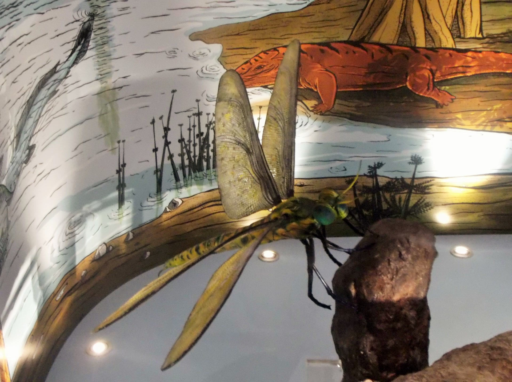
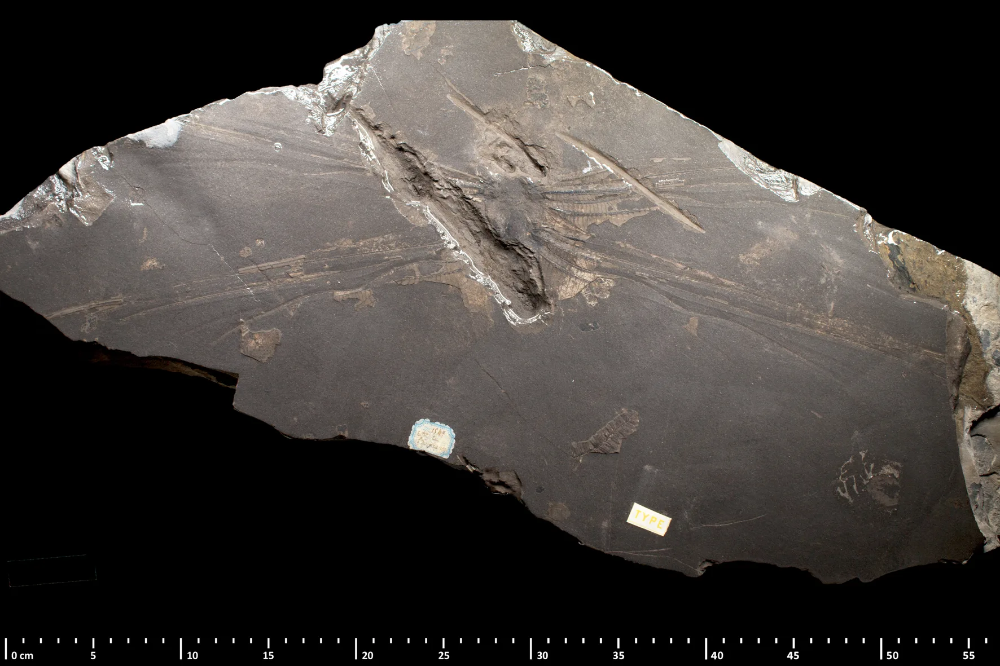

A giant insect
Meganeura
A 70 cm wingspan, a lectotype in Paris, and a model that is not the fossil.
Model: Eunostos, CC BY-SA 4.0, via Wikimedia Commons. Photograph of a reconstitution at the Muséum Henri-Lecoq, Clermont-Ferrand. The wall is a painting. This is not the fossil. Model photograph

TODO machine-draft translation: English for review.
There is no film of this animal made for this site. The picture behind the title is a photograph of a museum model. The photograph lower down is the fossil.
What we know
- Meganeura monyi is a giant insect from Commentry, in the Allier, France. The Paris museum dates it to about 300 million years ago, in the Late Carboniferous, and gives the wingspan as 70 cm. National Museum of Natural History, Paris
- The photograph below is the lectotype, MNHN R51142, at that museum in Paris. Fossil file page
- The picture behind the title was taken at the Muséum Henri-Lecoq in Clermont-Ferrand. It is a model. The wall behind the model is a painting in that exhibit. The painting is not a fossil this page identifies. The original file is 4608 pixels wide. This page serves 1920 pixels wide, not enlarged. Model photograph
- The photographer’s caption also says the wingspan could reach 70 cm, the same figure this site takes from the Paris museum.

What this page does not claim
- 70 cm is a wingspan. This page does not draw a person beside the insect, and it does not turn that wingspan into a body length.
- The pin is the town of Commentry. It is not the museum in Paris, and it is not the model in Clermont-Ferrand. The place marker was made for this site. Created by the Founder and SI. Commentry on OpenStreetMap

Sources (4)
- National Museum of Natural History, Paris: Meganeura monyi
- Wikimedia Commons — lectotype MNHN R51142, CC BY 4.0
- Wikimedia Commons — model photograph, CC BY-SA 4.0
- OpenStreetMap — the town of Commentry